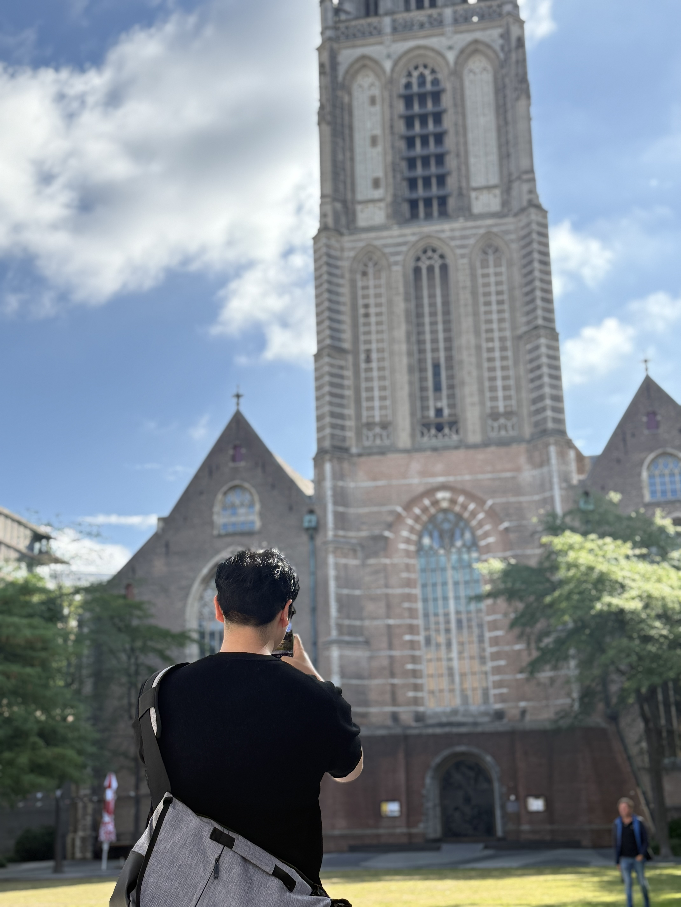

E-mail
jeonghwan.lee@khu.ac.kr
Google Scholar
Research Profile
GitHub
JHLee3199
Phone
+82-10-5567-3199
Location
Room 204, Engineering Experimental Building
Kyung Hee University, Yongin, Republic of Korea
Kyung Hee University, Yongin, Republic of Korea
Jeonghwan Lee | Nuclear Engineering
Doctor candidate
Research focuses on thermodynamics and kinetics of microstructural evolution in metallic alloys, using phase-field simulations combined with high-performance computing to investigate phase separation, irradiation damage, and microstructural stability.
Skills & Expertise
- Phase-field modeling of microstructure evolution behavior.
- Materials science: irradiation effects, phase stability, dislocations.
- Computational thermodynamics & CALPHAD.
- GPU-accelerated large-scale simulations.
- High-performance computing (MPI, OpenMP, CUDA for parallel computing).
- Python-based scientific software development (PyQt5 GUI + Fortran backend integration).